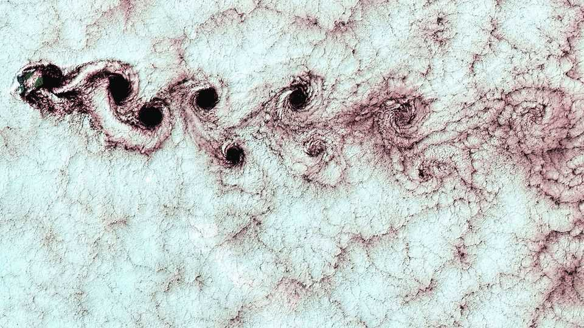

OpenAI's apparent maths breakthrough raises profound questions
It has stirred controversy about how the discipline should work

Sep 10th 2026
TO MARK THE turn of the century the Clay Mathematics Institute, in Denver, took stock of what mathematicians knew and what they did not. The result was a set of seven Millennium Prize problems representing the most important unsolved matters in maths. Solutions would attract a purse of $1m.
Until September 8th only one of these problems had been solved. On that day, however, OpenAI, an American artificial-intelligence firm, announced it had conquered another. This is called the Navier-Stokes existence and smoothness problem, and it relates to a set of equations that capture the flow of fluids. Mathematicians have been trying to bottle this one up for at least a century. OpenAI says a team of its AI agents solved it in just 88 hours.
The Navier-Stokes equations are useful for modelling how air flows over aircraft wings, oil squeezes through pipes and plasma circulates inside stars. But, though mathematicians have a good grasp of how to harness them practically, a thorough understanding of the properties of the equations themselves eludes them.
This is where the Millennium problem comes in. It asks “whether the Navier-Stokes equations can malfunction in a finite amount of time when describing a fluid of fixed density moving in three dimensions”. Such a malfunction would come in the form of a singularity: a point where a quantity, such as the fluid’s speed, becomes infinite and the equations break down. So far, mathematicians have been unable to prove such singularities never exist, but have also failed to find one.
Now, OpenAI claims its AI agents have found one. On August 28th the firm’s scientists began training a new model. They spawned teams of AI agents, powered by this model, that can read the internet, run code and communicate with one another. On September 1st they set them to work on the open Millennium problems.
Fifty hours later, a team of around 100 agents answered a question closely related to the Navier-Stokes problem. Noting this as a stepping-stone to a full solution, the scientists redirected their swarm of autonomous mathematicians to focus only on Navier-Stokes. On September 5th, after 88 hours of work, 2.7m messages and the consumption of at least $6.5m-worth of computing resources, a team of around 10,000 agents discovered a solution: a swirling vortex of spinning fluid with a velocity that grows uncontrollably to form a singularity.
With the Millennium problem allegedly solved, should OpenAI expect a cheque in the post? On that point, the situation is as chaotic as the equations themselves.
The firm says it began its work after hearing a rumour that Tristan Buckmaster, a mathematician at New York University, and Levent Alpöge of Anthropic, another AI firm, were nearing their own AI-assisted solution. After talks between OpenAI and Dr Buckmaster broke down, the mathematician published his unfinished work with Dr Alpöge online on September 8th, before the announcement from OpenAI (which does not, itself, go into the kind of detail a mathematician normally would about how the solution was arrived at). The two mathematicians’ solution is not complete, but it is close.
The spat raises questions that will become ever more pertinent as AI is unleashed on humanity’s many unsolved problems. Mathematicians of the human variety had made steady progress on the Navier-Stokes problem over the years, learning much along the way. So, if AI leaps the final hurdle to a solution, who deserves credit? And will the result, as might be expected to happen had humans come to it, open up more areas of research? There is also the troubling question of whether Dr Buckmaster’s and Dr Alpöge’s work, which made use of OpenAI’s products, might have inadvertently snuck into their models’ training data, as Dr Buckmaster suggests may have happened and OpenAI says it cannot rule out.
To answer one question, OpenAI has said it does not intend to claim the $1m prize. Mathematicians, meanwhile, will be pondering what all of this means for the future of their subject. ■